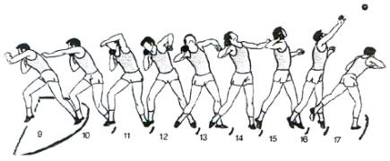

O peso é constituído por ferro fundido e chumbo ou bronze.
Na categoria masculina o instrumento pesa 7,26 kilos e tem o diâmetro de cerca de 12 centímetros, já na categoria feminina pesa 4 kilos e tem um diâmetro de 9 centímetro.
Para fazer o lançamento é necessário seguir os seguintes passos:
- - O atleta está de costas para a secção de lançamento e coloca o engenho entre o pescoço e o ombro do atleta (utilizando um pó quando necessário para diminuir o atrito);
- - O atleta gira sobre o seu próprio eixo para que o engenho adquira velocidade;
- - Por fim lança o engenho para a frente e para cima.
